Released on May 7, 2008
(Next Release on May 14, 2008)
Spring and the Summer-Grade Gasoline Price Bump
For many, the sight of a bird’s eggs hatching or tulips blooming signifies the arrival of spring. Historically, spring is also the time for rising gasoline prices. Over the last 10 years, the monthly average retail price for regular-grade gasoline has increased by an average 7 cents a gallon from April to May. In EIA’s latest Short-Term Energy Outlook, the average gasoline wholesale price for May is projected to increase by 10 cents per gallon from last month.
One reason for the rising gasoline prices is the increase in demand as drivers roll down their windows and venture farther into the great outdoors. Another important, but less well known, reason is that May 1 marks the date for most of the country when more expensive-to-produce summer-grade gasoline is required (April 1 in southern California).
The maximum allowable vapor pressure, which is measured as Reid vapor pressure (Rvp), is the primary distinction between winter- and summer-grade gasoline. When the weather turns warm, a high vapor pressure increases the evaporation of the gasoline into the atmosphere. The volatile organic compounds that are released from gasoline into the air not only contribute directly to health problems, but also indirectly through the formation of ground-level ozone and smog. Motor gasoline vapor pressure, which may be as high as 15 Rvp during the winter in some areas, is held to a level below 7 Rvp in many areas during the summer.
Gasoline vapor pressure is also important for an efficiently operating automobile engine. Vapor pressure must be high enough to ensure the ease of starting an engine, but it must not be so high as to lead to vapor lock, which occurs when the gasoline in the engine’s fuel delivery system turns from liquid to vapor, thereby, stalling the engine.
The U.S. Environmental Protection Agency first enforced new vapor pressure regulations designed to lower emissions of volatile organic compounds in June 1989. The vapor pressure standards were established for each of the 48 contiguous States during the summer months, from May 1 through September 15. The maximum allowable vapor pressure was lowered in phase 2 of the EPA regulatory program, which began on May 1, 1992. The reformulated gasoline program, which began in 1995, led to further reductions in allowable vapor pressure for about one-third of the gasoline sold in the nation. Since then, some cities and States have adopted their own vapor pressure limits (these unique local requirements are often referred to as “boutique” fuels). (A list of vapor pressure regulations in individual cities and counties that do not sell reformulated gasoline are available in the EPA’s Guide on federal and State Summer RVP Standards for Conventional Gasoline Only.)
Gasoline with lower vapor pressure is generally more expensive to produce. For example, one method refiners use to reduce vapor pressure is to reduce the volume of normal butane, a liquefied petroleum gas with high vapor pressure, that is blended into gasoline. During the month of April, the spot (wholesale) price of normal butane on the U.S. Gulf Coast was about $1.88 per gallon while the spot price of conventional gasoline was $2.80 per gallon. Removing low-cost high-vapor pressure components from gasoline increases the average cost of gasoline. Estimating the increase in cost to produce summer-grade gasoline is difficult. However, just looking at the 5 cents per gallon difference between the recent spot prices of 7.8 Rvp and 9.0 Rvp conventional gasoline on the Gulf Coast tells us that it is significant.
Watching a mother robin care for her chicks, one can only hope they will do well. Both the birds and those of us who enjoy birdwatching and other outdoor activities following a long winter undoubtedly appreciate the progress towards cleaner air that has been made in recent decades. This progress, however, does have an impact on the cost and price of gasoline.
U.S. Average Gasoline Price Continues Upward Climb; Diesel Price Slips Slightly
Once again, and for the sixth week in a row, the U.S. average retail price for regular gasoline moved higher, this time by one cent. As a result, the U.S. average price for regular gasoline set yet another all-time high of 361.3 cents per gallon. While the average price has gone up by 55.9 cents per gallon above the price a year ago, it has also shot up by nearly the same amount (exactly 56 cents) since December 31 of last year. On a regional basis, prices increased throughout the country with the exception of the Lower Atlantic portion of the East Coast where they went down a mere 0.6 cent. Elsewhere on the East Coast, prices increased by 2.5 cents per gallon in New England and 2.3 cents per gallon in the Central Atlantic while the average price for the entire East Coast region was 361 cents per gallon, a 0.9-cent increase. The average price in the Midwest was 357.9 cents per gallon, an increase of 1.1 cents. The increase in price for the Gulf Coast was smallest of any region, going up only two tenths of a cent to 350.7 cents per gallon. Despite an increase of 1.6 cents in the Rocky Mountain region, the price of 349.4 cents per gallon was the lowest for any region. The West Coast price went up by 1.4 cents to 380 cents per gallon, while the price in California increased by 1.1 cents to 390.3 cents per gallon.
For the first time in four weeks, the U.S. average diesel price did not increase. Although the prices slipped from their all-time highs in all regions with the exception of the Rocky Mountains, prices everywhere remained above $4 per gallon. The U.S. average dropped by 2.8 cents to 414.9 cents per gallon, 135.7 cents higher than the price a year ago. East Coast prices dropped the most of any region, down 3.6 cents to 419.4 cents per gallon. In the Midwest, the price went down by 3.2 cents to 410.1 cents per gallon. The price in the Gulf Coast remained the lowest of any region, falling by 2.9 cents to 408.4 cents per gallon. The Rocky Mountain region tallied the only price increase, moving up by 1.5 cents to 415.6 cents per gallon, 116.1 cents higher than a year earlier. On the West Coast, the average price moved down by 0.9 cent (the smallest drop of any major region) to 430.3 cents per gallon. In California, the average price went down by just 0.8 cent to 438.2 cents per gallon.
April Propane Build Above 5-Year Average
The April build in primary inventories of propane totaled nearly 4.6 million barrels, 11 percent above the most recent 5-year average of about 4.1 million barrels. Nevertheless, as of May 2, 2008, propane inventories stood at an estimated 29.8 million barrels, a level that continues on a path near the bottom of the average range for this time of year. Last week, propane inventories grew by 1.3 million barrels, boosted higher by the strong gain in Midwest inventories that totaled 1.1 million barrels. Elsewhere, inventories managed gains in the East Coast and Gulf Coast regions with similar increases of 0.1 million barrels, while in the combined Rocky Mountain/West Coast region, inventories remained virtually unchanged during this same period. Propylene non-fuel use inventories gained about 0.1 million barrels last week, and accounted for a slightly lower 7.3 percent share of total propane/propylene inventories compared with the prior week.
Text from the previous editions of “This Week In Petroleum” is now accessible through a link at the top right-hand corner of this page.
| Retail Prices (Cents Per Gallon) | |||||||
| 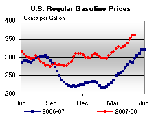 | 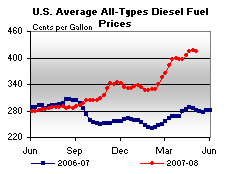 | ||||||
| Retail Data | Changes From | Retail Data | Changes From | ||||
| 05/05/08 | Week | Year | 05/05/08 | Week | Year | ||
| Gasoline | 361.3 | Diesel Fuel | 414.9 | ||||
| Spot Prices (Cents Per Gallon) | |||||||||||||||||||||||||||||||||||||||
| 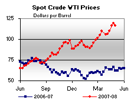 | 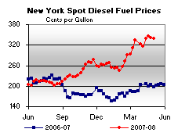 | ||||||||||||||||||||||||||||||||||||||
| 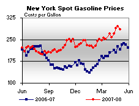 | 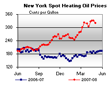 | ||||||||||||||||||||||||||||||||||||||
|
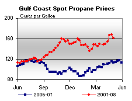 | ||||||||||||||||||||||||||||||||||||||
| Stocks (Million Barrels) | |||||||
| 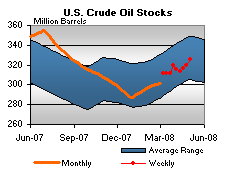 | 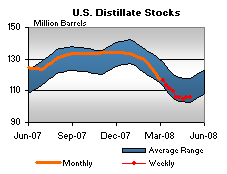 | ||||||
| 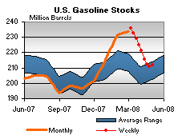 | 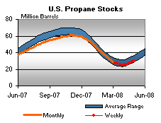 | ||||||
| Stocks Data | Changes From | Stocks Data | Changes From | ||||
| 05/02/08 | Week | Year | 05/02/08 | Week | Year | ||
| Crude Oil | 325.6 | Distillate | 105.7 | ||||
| Gasoline | 211.9 | Propane | 29.848 | ||||